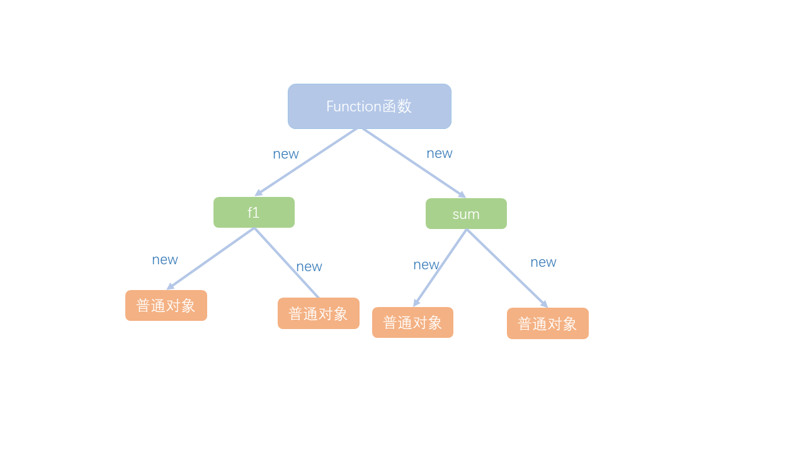
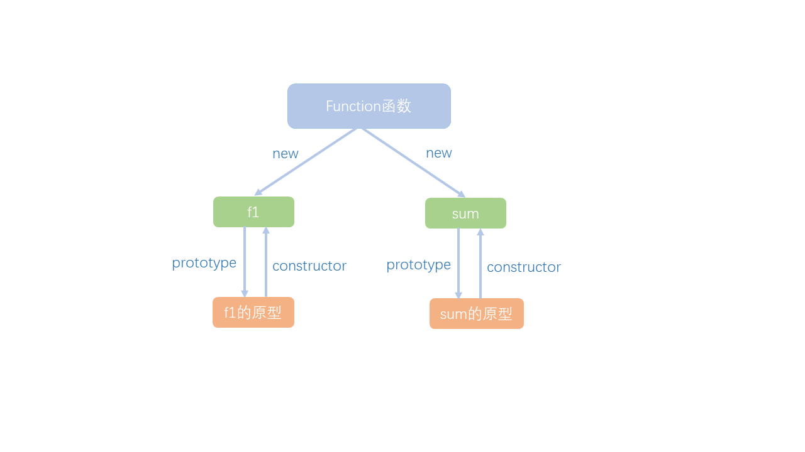
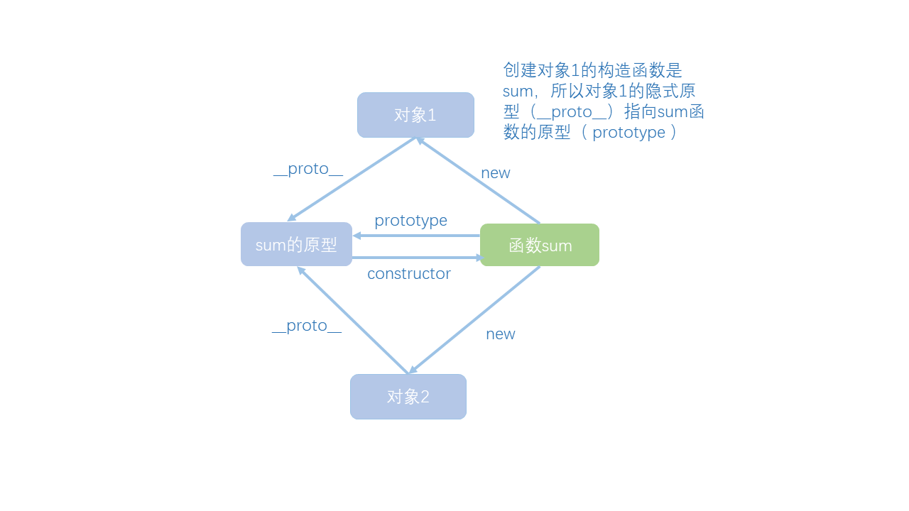
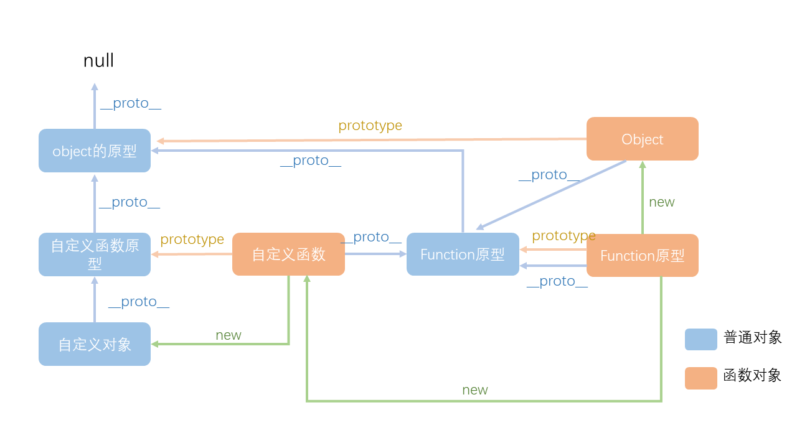
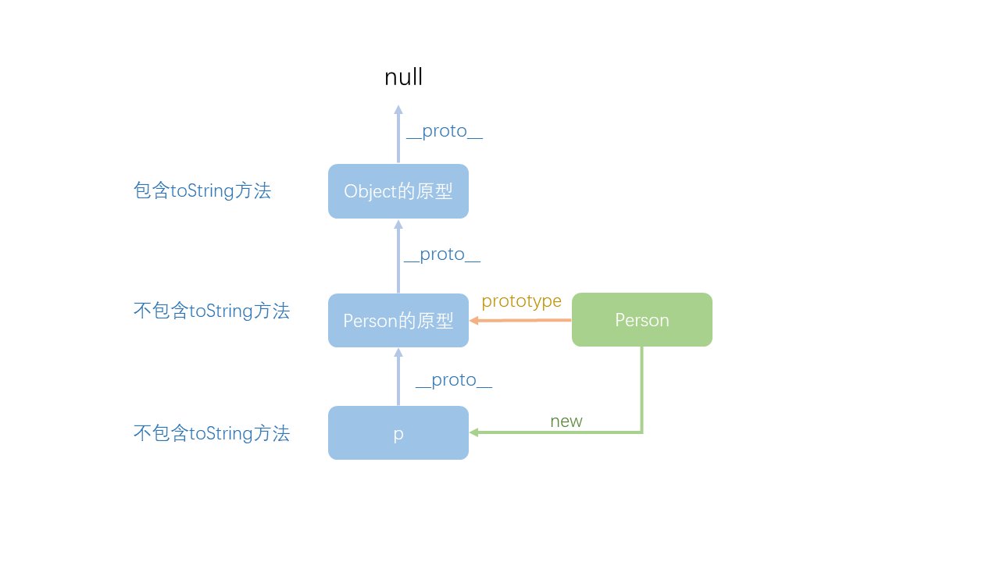

在讲原型之前我们先来了解一下函数。
在JS中，函数的本质就是对象，它与其他对象不同的是，创建它的构造函数与创建其他对象的构造函数不一样。
那产生函数对象的构造函数是什么呢？是一个叫做Function的特殊函数，通过new Function 产生的对象就是一个函数。
function f1() {}
//上面的函数等同于：
var f1 = new Function();
function sum(a, b) {
return a + b;
}
//上面的函数等同于：
var sum = new Function("a", "b", "return a + b");//前面的是函数形参名，最后一个参数是函数体也就是说：只要通过Function创建的对象就是函数，函数都是通过Function创建的。
看下面这张图片：

以上我们可以看到普通对象是由函数创建的，函数是由Function创建的。那我们会有一个疑问Function是从哪里来的？其实Function是不通过其他函数得到，它是JS执行引擎初始化就直接通过本地代码直接放置到内存中的。
当一个函数被创建后，这个函数就会自动附带一个属性prototype，它就是一个Object对象，代表着函数的原型。也就是说prototype就是原型对象
原型对象中包含两个属性：constructor和__proto__。
constructor这个属性是指创建原型的函数,它指向函数本身。所以有以下关系：

__proto__)所有的对象都包含一个属性__proto__，它指向创建该对象的构造函数的原型。看下面这张图理清它们之间的关系：

注意：函数才有prototype，实例对象只有__proto__
我们来检验一下自己是否理解了他们之间的关系,看以下代码：
function Person() {};
const obj1 = new Person();
const obj2 = new Person();
//两个对象的地址不同
console.log(obj1 === obj2); //false
//原型只有函数才有，obj1是普通对象，没有原型
console.log(obj1.prototype); //undefined
//obj1和obj2都是通过Person函数创建的，它们的隐式原型都指向Person函数的原型
console.log(obj1.__proto__ === obj2.__proto__); //true
//obj1是通过Person函数创建的，它的隐式原型指向Person函数的原型
console.log(obj1.__proto__ === Person.prototype); //true所以，由同一个函数产生的对象，它们的隐式原型，都指向函数的原型。那么函数原型中保存的东西，就可以被所有对象共享了！
既然所有的对象都有隐式原型(__proto__)，那函数也是对象，原型也是对象，它们也具有隐式原型。我们知道隐式原型指向创建该对象的构造函数的原型。而函数是有Function创建的，所以函数的隐式原型应该指向Function的原型
console.log(Object.__proto__ === Function.prototype); //true原型是通过Object创建的，所以原型对象的隐式原型指向的是Object的原型
console.log(Function.prototype.__proto__ === Object.prototype); //true那么我们又会遇到新的疑问：
我们始终要记得：对象的隐式原型，始终指向创建它的构造函数的原型。
但是Function是JS引擎直接放置到内存的，不通过构造函数产生；Object的原型是靠Object函数创建的。JS对它们进行了特殊的处理：Function的隐式原型指向自身原型。Object的隐式原型指向null。
给出整个原型图：

理解完上面这些让我们来看原型链
当我们写了一个构造函数，比如Person，然后用这个构造函数创建一个对象new Person()，创建的这个对象会自动的拥有一些自身并不存在的方法。看下面这个例子：
function Person(){}
const p = new Person();
console.log(p.toString()); //输出：[object Object]
从图中，我们可以清晰的看到，箭头（隐式原型指向）将对象p、Person的原型、Object的原型串成了一根链条。我们在对象p中使用的toString方法，实际上是Object原型中的toString方法。
以上我们都可以得知：
任何一个实例对象通过原型链可以找到它对应的原型对象，原型对象上面的实例和方法都是实例所共享的。
当JS查找一个对象的成员时，先查找自身是否拥有该成员，若没有，则在它隐式原型形成的链条中查询该成员，查找到了则停止，否则继续查找，直到链条的终点——NULL。若都查找不到，返回undefined。
看下面这个例子：
function Person() {
this.toString = function () {
return "这是对象自身的toString";
}
}
Person.prototype.toString = function () {
return "这是对象隐式原型中的toString";
}
const p = new Person();
console.log(p.toString()); //输出：这是对象自身的toString在这个例子中，给对象P和它的隐式原型（也就是创建p的构造函数的原型）上，都加入了toString方法，JS查找到了p自身包含toString，就会立即停止查找，使用它自身的toString方法。始终记得：查找对象成员时，JS会在链条上依次进行查找！
new Function创建的，Function本身除外，它是直接被放置到内存中的。